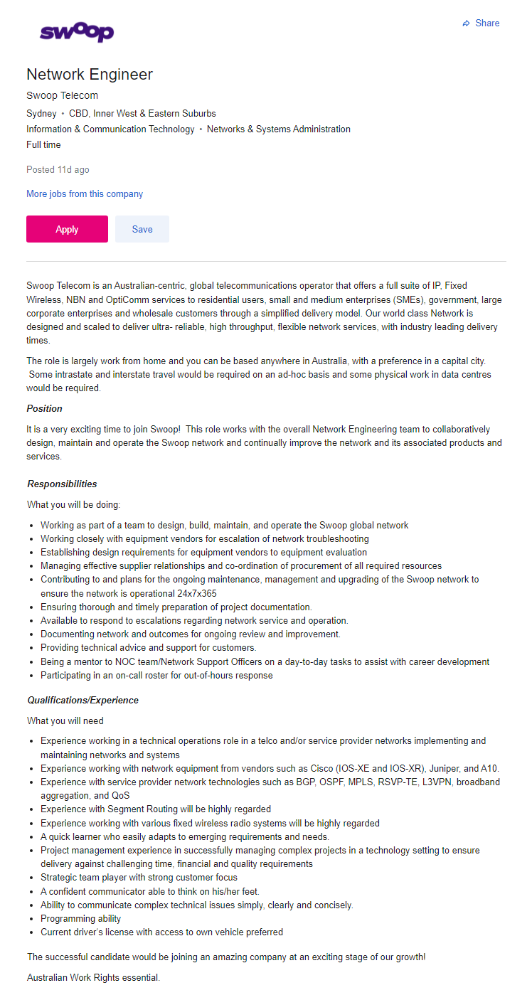
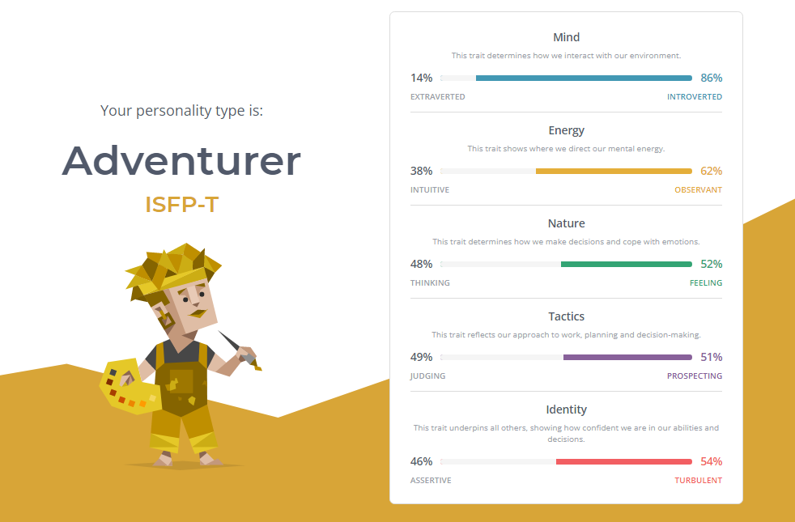
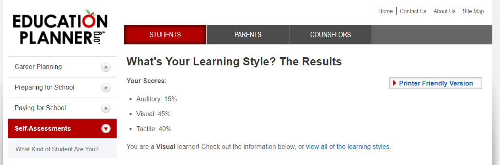
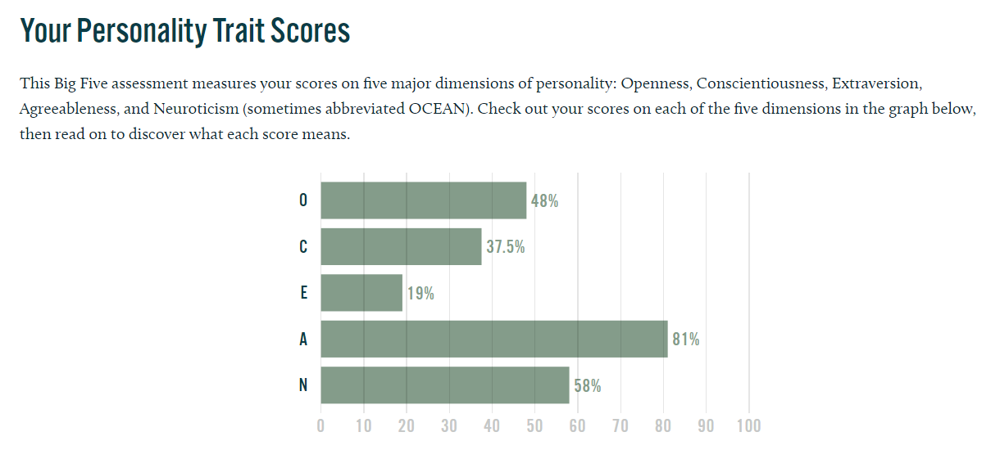

Personal Information

Name: Lynn Su Wai
Student ID: s3934613
Email: s3934613@student.rmit.edu.au
Profile Webpage: https://lswai.github.io/LynnWai-ePortfolio/LynnWai_ePortfolio.html
Repo Webpage: https://github.com/lswai/LynnWai-ePortfolio
I am 32 years old and was born in Myanmar (Burma), I came to Australia in 2010 for further study.I have Diploma of Electronics and Communications through TAFE NSW, Bachelor Degree of Engineering (Electrical) at University of Western Sydney. After I graduated from University, I moved to Dubbo, NSW Regional area and working full time. Dubbo is a nice and quiet place than Sydney. Since I can drive everywhere in Dubbo within 15 mins drive, there is no traffic jam in Dubbo. However, I have limited choice of Asian food, my favourite cuisine, in here. I love to watch Japanese anime and watching movies in my leisure time.
My Interest in IT
While I was studying in Sydney, I lived in shared-house. It was allowed girls only and most are Burmese people. In our teenage in Myanmar, we did not have knowledge of technology and IT stuff. Since I have a bit of hobby of fixing laptop and electronic things, they used to come to me when they faced an issue, such as manufacture drivers, printer, and router. However, it did not make me to study in IT yet. After I have got my full-time job, most of my colleagues are working in IT and Operations in my company. When we are on break or I have to help them to partially in their works. I began to understand and be interested in how IT plays a role in most of our lives and the ability to apply IT is unlimited.
Once I decided to start studying in IT. I have been searched universities that could study online since I am working full-time about 40 hours per week and live in Dubbo which made me narrow down to a few universities. I chatted with Student Advisor in Open University Australia (OUA) Chat Box and discussed about my criteria and my interest IT. I heard about RMIT is one of the best universities in Australia for IT skills and the online study flexibility that RMIT offers meet with my current work conditions. Therefore, I decided to RMIT would be the university that would meet my future IT career path.
During my RMIT course, I hope to gain the knowledge of programming with different languages, networking architecture, routing, switching, designing and troubleshooting in IT industry professionally and confidently. Moreover, I expect that I learn cloud computing, and some related data and call flow traffic in this course.
Ideal Job
A Telco company named Swoop is looking for an experienced Network Engineer to join their team. I think it is an excited opportunity to be a part of a team that provides service in people daily life since mobile, data, and calls have become essential communication in this decade.
The selected candidate will have to participate in design, implementation, operations and maintenance, deployment of network equipment, work with several vendors for raising issue to vendors and establishing design requirements. This role will need to involve in on-call roster for 24x7 network operations such as customer support, network upgrade, troubleshooting for after businesses hours.
The candidate will require to be a team player, have the similar role experience, have working experience with network equipment from well-known vendors, and skills with advanced networking and programming skills, wireless radio systems, excellent management skill in complex projects and have driver license with own vehicle.
In my current company, I work with some vendors and doing documentation for operations team and filed engineer for CPE devices and some routers. However, I am lack of networking and programming skills which could lead me to reach higher position or career success. I plan to learn from both my work and this RMIT course to achieve this goal.

Personal Profile
Myers-Briggs Test

According to 16 Personalities test result, I am an Adventurer ISFP-T and introverted. I am more observant than intuitive. The influence of feeling, prospecting and turbulent is slightly more percentage than thinking, judging, and assertive. It mentioned that adventurers’ strengths are charming, sensitive to others, imaginative, passionate, curious, and artistic. However, there are some weaknesses too such as fiercely independent, unpredictable, easily stressed and overly competitive.
Online Learning Style Test

This result shows that I am a visual learner with scores of my learning styles which are Auditory 15%, Visual 45% and Tactile 40%. I understand and remember things by reading or seeing pictures. This site also provides some suggestions for better in my learning, for example, avoid distractions during study times and try to visualise things that I hear.
Big Five Personality Test

In this test results, my agreeableness percentage is highest with 81% score and followed by Neuroticism with 58%. High Agreeableness scorers are pretty good team player, have empathy, and good at forgiving which is my strength but my weakness scores second in the results too which is Neuroticism. It mentioned that people with high score Neuroticism are nervous and cannot move on for a long time when they make a mistake.
These three results showed what type of person I am and pointed out both strengths and weaknesses of mine. Moreover, I have got a few suggestions for better learning approach. Since I know these facts in advance, I could contribute my strengths with my team and would be aware of my weaknesses so that that I can play well as a team member.
Project Idea
Overview
Nowadays, the number of electronics devices in the offices have increased day by day therefore, I propose this project to provide network monitoring system for small and medium enterprises (SMEs) in Australia. This system will have ability to monitor electronics devices such as web camera, routers, microwave dish, computers, and so on. The main purpose of the project is that instead of using Web Interface, SSH, Telnet and etc to check and troubleshoot one after one by the time the issue occurs, we can observe on the monitoring system and conclude or narrow down easily which link is the root cause of the problem.
Motivation
In an Organisation for Economic Co-operation and Development (OECD) scoreboard, Australia Bureau of Statistics (ABS) reported in 2018 that the number of small and medium sized enterprises (SMEs) was 2309436 which was 99.8% of all businesses in Australia. In addition, the development of
Description
The architecture of the monitoring system has two parts, server, and agent. Server will be setup on host and plugin will be installed on desired devices that we would like to monitor. The server will run plugins occasionally on the devices to be monitored through process scheduler and the plugins will collect data from the devices such as memory, CPU, packet loss etc. After collecting data from the devices, plugins will send the collected data to the scheduler. Then, the notification will be sent by the process scheduler and update the status of check to GUI.
The monitoring system has ability to monitor various types of database servers such as SQL Server, Oracle, Mysql and so on and provides application-level information. It supports Simple Network Management Protocol (SNMP) which is available on most industry devices in these days like microwave dish and industrial 4G modem. Moreover, scripts such as shell, python, and perl can manually be programmed for the devices which are not available SNMP for the monitoring system.
There are two types of checks in this monitoring system which are Active Checks and Passive Checks. Active Checks are executed by the system on a regular interval and retry interval. Retry interval is the period to trying to collect data to remote devices if the attempts have failed during regular interval for some unexpected reason for a while. Passive Checks executed by the external command file from external applications which will be useful when devices cannot be monitored on regularly. The system reads and sends the results of periodic checks in the queue for processing later. The system will check the status by the time the checks are proceed and send out the notifications or update the status on monitoring system depending on the results of check.
The check results will be determined by these two states, Soft State and Hard State. When the system checks and found a device is down for a short period of time or different for the pervious status or unknown, it identifies as soft state, and the device will be checked again and again until it can conclude the status is persistent.
Hard Sate will be defined by the time the system when the system has completed the maximum check and find that the device shows still down.
There will be four statuses for each check, OK, WARNING, CRITICAL, and UNKNOWN.
- OK – the system will show OK when the check is fine.
- WARNING – the system will say WARNING when the check is fine but need to be aware (for example, when the latency of ping is high, the device is reachable but needs attention.
- CRITICAL – the system will display when the check determine that it is not working correctly.
- UNKNOWN – the system will represent UNKNOWN when it cannot determine any of the above statuses.
This is powerful engine with comprehensive dashboard to be monitored the users properly. The users will be able to access the system at the same time and have history logs and database which will be suitable to use it in lab tests for IT developer which will assist for their application or project performance.
Tools and Technologies
To achieve this project, mini personal computer will be required to use as to install system monitoring tools such as Nagios or Centreon. which are open sources, continuous monitoring tools and Linux Operation System like Centos and Raspbian need to be installed to implement this open source in mini PC. Plugins also need to be installed to collect data from remote devices. SNMP MIB files are required from devices to be monitored if it is available and manual scripts will need to be written for the desired parameters of the devices if MIB files are not supported by the manufacturer. The language of the scripts could be shell, perl and python.
Skills Required
It is true that the certain level of coding and Linux will be required for integration the monitoring system, specifically, Shell, Perl and Python Languages are mostly used in this type of monitoring system which is also the reason I decided to study RMIT course. If we are going to use Raspberry Pi for this project, Debian or Rapbian Linux experience will be handy and if we decide to choose other types of personal computer, Centos or compactible OS Linux experience would be appreciated. MySQL knowledge will need to apply in some cases depending on what we want to monitor. Since the monitored devices could be different systems and may vary, observation and analysis skills are another necessary skill for troubleshooting like Nagios Remote Plugin Executor (NRPE) when we face riddles.
Outcome
If this project is successful, the SMEs will save time and employee expense since they do not need to hire people to log in every device and investigate the root cause of the issue. It will be easier and support IT staff or network engineers to identify the network error or issue in specific time efficiently. Therefore, the employee can emphasise on other tasks and it will assist workload balance of the staff. There is no doubt that network stability will improve since the detection time is quicker, therefore, both employers and employee have benefits of using this monitoring tool.
References
- Seek 2021, Swoop Network Engineer, Seek, viewed 16 December 2021, <https://www.seek.com.au/job/55262071?type=standout#searchRequestToken=ee6921ab-2b29-4dce-9ad3-316fbe185245 >
- 16 personalities 2021, Free Personality Test, NERIS Analytics Limited, viewed 16 December 2021, < https://www.16personalities.com/ free-personality-test >
- Education Planner.org 2021, What’s Your Learning Style?, Pennsylvania Higher Education Assistance Agency, viewed 16 December 2021, < http://www.educationplanner.org/students/self-assessments/learning-styles.shtml >
- Truity 2021, The Big Five Personality Test, Truity, viewed 16 December 2021, <https://www.truity.com/test/big-five-personality-test>
- OECD iLibrary 2021, Financing SMEs and Entrepreneurs 2020 : An OECD Scoreboard, OECD iLibrary, viewed 17 December 2021, <https://www.oecd-ilibrary.org/sites/2bf6bc72-en/index.html?itemId=/content/component/2bf6bc72-en >
- Tutorialspoint 2021, Nagios, Tutorialspoint, viewed 17 December 2021, < https://www.tutorialspoint.com/nagios/index.html >